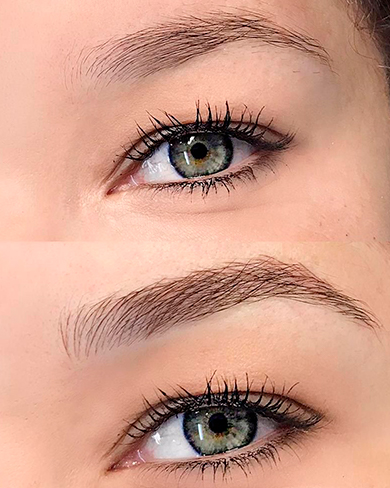

Fio a fio, sombreado e técnica híbrida realizados com 35 anos de expertise no Batel, Curitiba. Cada sobrancelha é mapeada, desenhada e executada de forma única para o seu rosto.
Micropigmentação de sobrancelhas é um procedimento semi-permanente que implanta pigmentos de alta qualidade nas camadas superficiais da pele, simulando pelos naturais ou criando um efeito de sombra suave. O resultado é natural, duradouro e seguro.
Diferente de uma tatuagem convencional, o pigmento é formulado para se degradar gradualmente ao longo de 1 a 3 anos, desaparecendo de forma homogênea. Isso garante flexibilidade: à medida que tendências mudam, o resultado se atualiza.
No studio da Denise de Paula, no Batel em Curitiba, cada procedimento começa com um mapeamento facial completo — análise de proporções, arquitetura óssea e expressão natural antes de qualquer traço ser desenhado.

A técnica ideal é escolhida na avaliação gratuita, levando em conta tipo de pele, quantidade de fios e estilo pessoal.
Traços finos que imitam pelos naturais, criados com lâmina de precisão. Resultado quase indistinguível das sobrancelhas reais. Cada fio é desenhado respeitando a direção e espessura dos pelos naturais.
Ideal para: Peles secas a normais · Quem busca resultado ultra-natural · Sobrancelhas com falhas
Efeito de sombra suave que preenche e define as sobrancelhas com volume gradual. Mais durável em peles oleosas e result mais "maquiado" mas ainda elegante e natural. Um dos mais pedidos em Curitiba.
Ideal para: Peles oleosas · Quem quer mais volume · Resultado mais definido
Fios naturais na cabeça da sobrancelha com sombreado suave no corpo e na cauda. O resultado mais completo e versátil — naturalidade onde precisa, volume onde faz falta. A mais escolhida pelas clientes de Denise em Curitiba.
Ideal para: Todos os tipos de pele · Quem quer o melhor dos dois resultados
A micropigmentação preenche regiões com falhas, reconstrói sobrancelhas rarefeitas por depilação excessiva ou perda natural de fios, criando resultado natural e harmonioso em Curitiba.
Pacientes com alopecia, hipotireoidismo ou quimioterapia encontram na micropigmentação de sobrancelhas uma solução segura e natural para resgatar a simetria facial em Curitiba.
Acorde pronta. A micropigmentação de sobrancelhas elimina a rotina de maquiar sobrancelhas todo dia — ideal para mulheres com agenda cheia em Curitiba e quem pratica esportes.
Sobrancelhas bem desenhadas e preenchidas têm efeito lifting visual imediato. A micropigmentação de sobrancelhas é uma das apostas mais eficazes no rejuvenescimento facial em Curitiba.
Resultados reais de clientes atendidas no studio da Denise de Paula no Batel, Curitiba.


A técnica ideal depende do seu tipo de pele, quantidade de fios e preferência estética. O fio a fio é ultra-natural, ideal para peles secas. O sombreado dura mais em peles oleosas. A técnica híbrida combina os dois. A avaliação gratuita com Denise de Paula no Batel, em Curitiba, define o melhor caminho para o seu caso.
O valor varia conforme a técnica e a complexidade do caso. No studio do Batel, em Curitiba, realizamos uma avaliação gratuita presencial para indicar a técnica ideal e apresentar o investimento sem surpresas. Entre em contato pelo WhatsApp: (41) 97401-6961.
Não. Aplicamos anestésico tópico de alta qualidade antes do procedimento. A maioria das clientes descreve como arranhado suave ou leve pressão — muito mais confortável do que imaginam antes de chegar ao studio. A região da sobrancelha é menos sensível que os lábios.
Em média, 1 a 3 anos, variando conforme tipo de pele, exposição solar, uso de ácidos e retinol, e cuidados pós-procedimento. Peles oleosas tendem a degradar o pigmento mais rapidamente. Retoques anuais mantêm o resultado de micropigmentação de sobrancelhas em Curitiba sempre perfeito.
Sim. Para pele oleosa, recomendamos o sombreado (powder brow) ou a técnica híbrida de micropigmentação de sobrancelhas em Curitiba. O fio a fio tende a desaparecer mais rapidamente em peles com maior produção de sebo. Denise de Paula avalia seu tipo de pele na consulta gratuita.
A cicatrização completa leva 28 a 40 dias. Na primeira semana as sobrancelhas ficam mais escuras e podem descamar levemente — é normal. Entre o 10º e o 30º dia a cor suaviza naturalmente. O resultado definitivo da micropigmentação de sobrancelhas em Curitiba aparece após esse período.
Não. Denise de Paula mapeia o formato ideal sobre os fios existentes, sem necessidade de raspar. Os fios naturais servem como referência para criar o design mais harmonioso. Manter os fios ajuda a criar um resultado ainda mais natural na micropigmentação de sobrancelhas em Curitiba.
Avaliação gratuita no Batel, Curitiba. Sem compromisso.